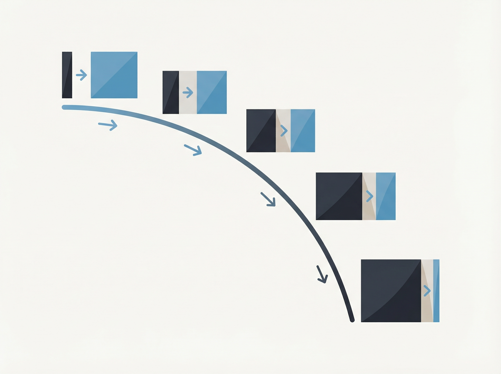
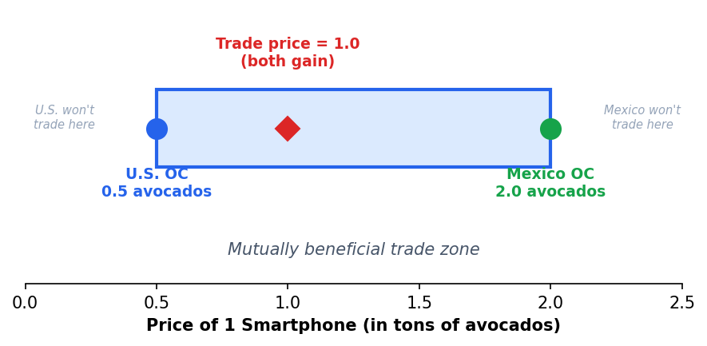

Q1: What is opportunity cost? Give a one-sentence definition.
Q2: Name one economic model we discussed in Chapter 2.
Q3: Is this positive or normative? "The U.S. should ban Chinese electronics."
Today: We combine opportunity cost + models → the PPF.
ECON 1116 — Principles of Microeconomics
Why LeBron hires a landscaper, why your iPhone was built in 12 countries, and why comparative advantage is the most powerful idea in trade.
Dr. Ryan Piao | Northeastern University
Chapter 3 | 75 min
3.1
Draw and interpret a production possibilities frontier (PPF)
3.2
Calculate absolute and comparative advantage from a productivity table
3.3
Explain why trade based on comparative advantage benefits all parties
3.4
Describe how specialization expands consumption beyond the PPF
Q1: What is opportunity cost? Give a one-sentence definition.
Q2: Name one economic model we discussed in Chapter 2.
Q3: Is this positive or normative? "The U.S. should ban Chinese electronics."
Today: We combine opportunity cost + models → the PPF.
LeBron James can probably mow his own lawn faster than anyone he'd hire.
Yet he pays someone else to do it.
Why?
The same logic explains why your iPhone was built across 12 countries — and why comparative advantage is one of the most powerful ideas in economics.
Section 1
LO 3.1 — Draw and interpret a PPF
Imagine an economy producing only wheat and steel with fixed resources.
Production Possibilities Frontier (PPF) — A curve showing the maximum combinations of two goods an economy can produce using all resources efficiently.
Combines Ch1 opportunity cost + Ch2 models into one visual tool.
Point A
On the frontier
Efficient. All resources in use. More of one good = less of the other.
Point B
Inside the frontier
Inefficient. Idle resources — could produce more of both goods.
Point C
Outside the frontier
Unattainable — need growth (technology, capital, education) to reach it.
COVID-19 example: In April 2020, U.S. capacity utilization crashed to 64.2% — deepest ever. The economy was at Point B. Recovery = moving back to the frontier.
The slope of the PPF = opportunity cost.
Increasing opportunity cost: Resources aren't equally suited to all tasks. Shifting the worst wheat farmers to steel first is cheap. Shifting the best farmers later is expensive.
This is why most real PPFs are bowed outward (concave to the origin).

An economy is at Point B (inside the PPF). What does this mean?
A
It's producing efficiently
B
It has idle resources it could put to work
C
It needs new technology
D
It's producing too much of one good
Bloom's L4 — Analyze
"The U.S. economy was deep inside its PPF in April 2020 (capacity utilization = 64.2%). What specific forces moved it back toward the frontier?"
Stimulus — spending increased
Vaccines — workers returned
Supply chains — recovered
PPP loans — kept businesses open
Section 2
LO 3.2 — Calculate from a productivity table
Absolute Advantage
Can produce more with the same resources.
Compares productivity levels.
Comparative Advantage
Can produce at lower opportunity cost.
Compares what you give up.
David Ricardo, 1817. Tested by Costinot & Donaldson (2012): R² = 0.93 across 55 countries. A 200-year-old theory that still works.
Each country has 100 workers. Output per worker per year:
| 📱 Smartphones | 🥑 Avocados (tons) | |
|---|---|---|
| United States | 10 | 5 |
| Mexico | 2 | 4 |
Absolute advantage? U.S. in both goods (10 > 2, 5 > 4).
So... why would the U.S. ever trade with Mexico?
🇺🇸 United States
OC of 1 📱 = 5 ÷ 10 = 0.5 tons 🥑
OC of 1 ton 🥑 = 10 ÷ 5 = 2 📱
🇲🇽 Mexico
OC of 1 📱 = 4 ÷ 2 = 2 tons 🥑
OC of 1 ton 🥑 = 2 ÷ 4 = 0.5 📱
| OC of 1 📱 | OC of 1 ton 🥑 | |
|---|---|---|
| U.S. | 0.5 🥑 ✓ Lower | 2 📱 |
| Mexico | 2 🥑 | 0.5 📱 ✓ Lower |
📱
U.S. Specializes
Comparative advantage in smartphones
(OC = 0.5 < 2)
🥑
Mexico Specializes
Comparative advantage in avocados
(OC = 0.5 < 2)
⚠️ Misconception: "If one country is better at everything, it has nothing to gain from trade."
Reality: Comparative advantage is always reciprocal. If you have it in one good, your partner has it in the other.
Who has the comparative advantage in avocados?
A
U.S. — higher productivity
B
Mexico — lower opportunity cost
C
Neither
D
Both equally
Bloom's L4 — Analyze
"If the U.S. is better at producing BOTH smartphones AND avocados, why would it ever trade with Mexico?"
Use the concept of opportunity cost in your one-sentence answer.
Target answer: "Every hour the U.S. spends growing avocados is an hour NOT making smartphones — and it's really, really good at smartphones." Trade lets it focus on what it's most good at.
Section 3
LO 3.3 & 3.4 — Why both sides gain
BEFORE (50 workers per good)
| 📱 | 🥑 | |
|---|---|---|
| U.S. | 500 | 250 |
| Mexico | 100 | 200 |
| World | 600 | 450 |
AFTER (full specialization)
| 📱 | 🥑 | |
|---|---|---|
| U.S. | 1,000 | 0 |
| Mexico | 0 | 400 |
| World | 1,000 | 400 |
📱 +67% smartphones | 🥑 −11% avocados | But through trade, both get more of both.
U.S. trades 300 📱 to Mexico for 300 tons 🥑
🇺🇸 United States
📱 700 (+200)
🥑 300 (+50)
✓ More of BOTH goods
🇲🇽 Mexico
📱 300 (+200)
🥑 100 (−100)
✓ 300 📱 would cost 600 🥑 domestically
Trade expands consumption beyond the PPF. Both countries consume what neither could produce alone.

Trade price must be between the two domestic opportunity costs:
0.5 < Ptrade < 2
Below 0.5 → U.S. refuses
Above 2.0 → Mexico refuses
At 1.0 → both gain moderately
Where the price lands depends on bargaining power — Chapter 4.
Bloom's L5 — Evaluate
"You're a trade negotiator. U.S. OC = 0.5 avocados per phone. Mexico OC = 2.0. What trade price do you propose — and whose side benefits more?"
P = 0.7
Favors Mexico
(close to U.S. cost)
P = 1.0
Both gain moderately
(middle of zone)
P = 1.8
Favors U.S.
(close to Mexico's cost)
Section 4
LO 3.4 — Winners, losers, and the iPhone
Design: Cupertino, CA
Chips: TSMC, Taiwan
Display: Samsung, South Korea
Assembly: India 44%, China, Vietnam
India: 13% → 44% in one year. Comparative advantage shifts with tariffs and policy.
✓ The Gains
Global trade: $34.7T in 2025
Extreme poverty: 36% (1990) → <9% (2024)
Cheaper goods for billions of consumers
✗ The Costs
"China Shock" (Autor et al.): communities exposed to imports saw job losses, lower wages
Recovery was generational — displaced workers never fully recovered
Gains spread broadly; losses concentrated
Positive analysis: Trade increases total production. Normative question: Is the distribution fair? → Chapters 7 & 14
After specialization + trade, the U.S. has more smartphones AND more avocados than before. This is possible because:
A
The U.S. is just better at everything
B
Mexico is giving the U.S. free goods
C
Specialization + trade lets both consume beyond their PPFs
D
The U.S. forced Mexico into a bad deal
Your comparative advantage isn't what you're best at — it's where your advantage over others is greatest.
A surgeon who is also an excellent cook doesn't prepare hospital meals. A Mandarin-fluent software engineer specializes in the Chinese market.
Major choice = specialization decision
First job = where your OC is highest
Skill investment = shifting your PPF
🙋 Quick show: How many of you have paid someone to do something you could do yourself?
The PPF shows trade-offs. On = efficient. Inside = wasteful. Outside = growth needed.
OC increases. PPF bows out because resources aren't equally suited to all tasks.
Comparative advantage drives trade. Even if one side is better at everything, both gain.
Trade expands consumption beyond the PPF. Both parties consume more than they could alone.
Next: If comparative advantage tells us who produces what, how do buyers and sellers agree on prices? → Chapter 4: Supply & Demand
1. One thing I learned:
"In your own words, explain why a country that is better at producing everything would still trade."
2. One thing I'm confused about:
(open-ended)